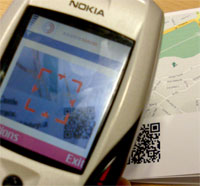
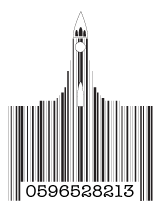
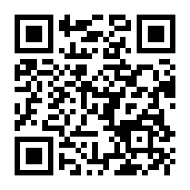
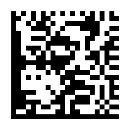
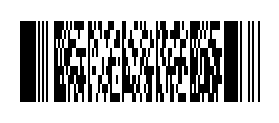
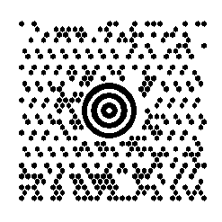
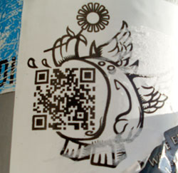
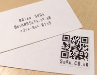

The term “2D Barcode” is the name given to the next generation of the barcodes we are used to on everyday packaging and products. Before digging into 2D barcodes, we need to explain the history of 1D barcodes and how we arrived at this point. 1D barcodes are the traditional barcodes we see everyday, they are called one-dimensional because their pattern of thick and thin vertical bars is read in only one direction, from left to right.
History
The barcode that we know and use today seems so ubiquitous and obvious, but it wasn’t always that way. The history of the barcode is an interesting one, it stems from a need for shopkeepers to automatically read product information at the checkout, and at roughly the same time, the US national rail system needing to quickly and uniquely identify the train cars that were moving around the country. These early barcode forerunners date to the 01950s and early 01960s, but didn’t manage to become viable until the mid 01970s. Internally, companies such as IBM, RCA and others, were testing various types of barcodes to track parts, equipment and products as early as the 01940s, so it was only a matter of time before a single standard emerged at the consumer level.
On June 26th, 01974, the first barcode used in a commercial application was scanned. It was a 10 pack of Wrigley’s Juice Fruit Gum, which is now in the Smithsonian Institute. From this point forward, the hardware to scan, read and connect with a back-office computer system which contained more information about the product had reached its tipping-point in cost and usability. The barcode entered into our daily lives 35 years ago this month.
The next logical progression of barcodes is to move from a unique key that points to more information in a centralized back-office to both a decentralized and self-encapsulated system—containing the data itself rather than just the pointer. To do this, a new breed of barcodes needed to be invented. It was the evolution of the technology to meet modern day needs and demands that produced 2D barcodes.
2D Barcodes
To read standard barcodes you needed your own barcode reader, with the exception of the ill-fated CueCat, there was never much available at the consumer level. Only recently have we crossed the threshold of cheap processing power and camera resolutions good enough to correctly identify and decode barcode data. At that point, everyone carrying a modern mobile phone met the minimum requirements of a barcode scanner and was capable of opening the door to understanding the message behind the lines and dots.
2D barcodes are called two-dimensional because their information is encoded in two directions, both horizontally and vertically. This allows them to pack in more information per square unit than their predecessors.
2D barcodes can be scanned through most modern camera phones or webcams. Firstly, you need to spot a 2D barcode so you know what to scan. Secondly, your mobile device needs to have some decoding software. Many of the new Nokia phones come with the software installed by default. For other devices you might need to download some free software.
Once you recognized the 2D barcode, you launch the application and point the camera at it. The application will decode the barcode and spit back the encoded text. Some applications are “helpful” and if it is a URL it asks you if you want to launch the browser.
Design
With 1D barcodes, you only need to be able to read the barcode horrizontally over a small range. The standard height of the barcode is there to make acquisition easier, but there is no prohibition to the actual height. This has lead to a variety of stylized barcodes. As an example I created this barcode mimicking Hallgrímskirkja, it isn’t real, but demonstrates the possibilities of branding even in the purchasing process.
2D barcodes can also be styled. Unlike traditional barcodes, there is some error correction built into the various formats. The error correction allows for a percentage of the barcode to be damaged and still be readable. This was originally intended for damage due to tears in the packaging, water damage, etc., but it can easily be turned into damaging on purpose for the reason of branding. Portions of the barcode can be colored or removed and corporate logos or other symbols put in instead.
Types of 2D Barcodes
There are many different types of 2D barcodes vying for attention. The ones that will ultimately win-out are the formats that have been put into the Public Domain and require no royalty payments. We saw this in the cargo shipping industry, both the size of the container and the mechanism for connecting the containers together became de facto standards due to the market share of the major company, but in making sure their formats were the ones adopted by the standards organizations, they needed to be royalty free. It was important to give-up the patents in order to maintain both the competitive edge in their technology and avoiding an alternative format from being chosen and then spending a fortune to bring their fleet up to the specifications of a competitor! The same will play out in the 2D barcode world and those with royalty free patents will ultimately win out over the closed source versions.
Other key factors in adoption will be market share as well as getting connected to major initiatives and legislation. Within the next few years, all airlines will be required to accept printable boarding passes. In doing so, 2D barcodes will move from an alpha-geek technology, to a common household disposable concept. Which format comes-out on top might well be the one that connects itself to a larger industry, such as travel. Even today, in Germany, on the Eurostar and other places, the train tickets are using 2D barcodes to encode your entire itinerary and travel information.
Which format wins out is irrelevant, that is a bikeshed question. It is more important to know how they work, the pros and cons of each, and where the adoption is heading so you can best plan how you might want to integrate them into your own workflows and technologies. The following are various formats each encoding http://optional.is/required/ so you can compare the differences.
QR Code
QR Codes are my personal favorite and usually the ones I am using in projects. They are very popular in Oceana and are slowly taking off in the US via advertising. QR Codes can encode 4000+ characters including Unicode. This makes them more popular in non-ASCII written regions. It is also possible to encode text or binary data into the barcode. This means possible downloads of, audio clips, images, coupons or other files.
I have been experimenting with different text by adding different protocols such as http, tel, mailto, sms and others. Some decoding software recognizes them—others don’t, there’s no manditory requirements for what formats need to be understood. That said, the applications I have tested manage to identify links and make them clickable, sms protocol to easily create SMS messages, tel protocol which make the number easily dialable and a few other surprises.
You can also use the Google charts API to generate QR Codes dynamically for your applications. This is a very easy way to get started without having to know anything about programming languages or installing software.
Data Matrix
Data Matrix is very similar to QR Codes and has gained traction in Europe. The differences are negligible between this and QR Codes. Most software that can decode both, so no matter which barcode you are looking at, your software will probably be able to read it. You might also hear about a format called “Semacode” this is a Data Matrix barcode under a different name, there are a few fragments in the market. The Data Matrix format can easily be identified by the solid black line around two of the sides. This is the registration area so the decoding software can orient the direction.
These are the two major types of 2D barcodes when talking about consumer level, DIY type barcodes. A simple way to follow the discussion is to use Google Trends and search for the various 2D barcode types. At some point in late 02007–early 02008, QR Code popularity surpassed Data Matrix. This could be because QR Codes had an uptake in consumer usage and/or Data Matrix has been rebranded under a non-technical name, therefore new terms need to be considered. Either way, as time passes this is a good source to see the popularity of the different formats in different regions.
PDF417

PDF417 format has been taken up by the airlines and travel industry for the printable boarding passes along with various postal services for printable stamps. I am sure it has other applications, but you will most likely come across this next time you fly or receive a letter. Therefore, it is a good format to know about because it is not likely to disappear any time soon.
MaxiCode

The MaxiCode format was developed in the package shipping industry to quickly track packages. It has limited use outside of this. The code itself can only encode 93 characters, but can be chained together to encode close to 800 total. This is fine for unique package ids, but for anything beyond that, it isn’t very helpful. Keep an eye out next time you have to sign for a package, see if it has a MaxiCode or other 2D barcode.
These are far from the only types of 2D barcodes available, there are plenty more, but these seem to be the ones that have reached the greatest critical mass in our daily lives.
Future opportunities
The possibilities of 2D barcodes goes beyond the standard; scan it, look-up a price and spit that back to the customer. Knowing that the 2D barcode can encode more data than a UPC number, we can begin to think of them as hyperlinks from real-world physical objects to the virtual-world of the Internet.
Is black and white the new blue? Maybe instead of black and white squares, they should be printed with blue ink to better make the association with hyperlinks on the web? Ultimately this is what they are becoming, instead of clicking with your mouse, you are clicking with your phone.
Everything you can see around you has more metadata about it than is visible, how much its worth, when you bought it, who owned it before you, etc. Much of this data in in paper work somewhere else. Now, with 2D barcodes, it becomes possible to create links between these objects and pages on the web. Maybe to Amazon to annotate that old book you have, or to wikipedia to further give the backstory about the object, or even to your blog about your trip when you bought that crazy souvenir!
As I was wandering around Berlin, Germany, I saw this QR Code stuck onto a pole. It isn’t a hyperlink or any downloadable file, it was simply the words “Life is good, you are evil”. I was taken aback, I was expecting something else. This could be a line of poetry, it could be the secret phase to get into a party, it could be a piece of a city-wide puzzle or it could be something else, or nothing else. It might be acting as a Shibboleth to weed out those who know about 2D barcodes and those who don’t. Without knowing about 2D barcodes there would have been no reason for me to take out my phone on the corner of a busy street to find out what this little riddle was telling me. Now it has created more questions than answers.
Some 2D barcode decoding software recognizes special text formats, including vCards. These are the digital business cards that your address book, email program and mobile phone all use to exchange contact details. In the future it might be more common to get handed a business card which you flip over to find a 2D barcode on the back. You could retype everything on the front into your address book or simply take a photo of the barcode and have it instantly import. The downside of encoding the data as a vCard is that you risk the decoding software not understanding it, as well as the data getting stale. If the 2D barcode was instead a hyperlink, you could point it at your most current contact information. Even if the printed data goes stale, the digital information can easily be updated.
There are plenty more possbilities for 2D Barcodes from games like Hunt the Wumpuses to wine recommendations to product tracking in magazines. If you can get into the mindset of meshing our physical world and augment it with virtual pointers, annotations and notes, then you can begin to see 2D barcodes being used in alsorts of situations.
Issues & Studies
As with any new technology, there are always hurdles to be overcome. With 2D barcodes as hyperlinks from the physical to the virtual, there is an understanding gap, it isn’t a technical problem, but a social one. As people see a 2D barcode stuck onto a post, they are self-conscious about taking out their phone and snapping a photo—something still “feels” wrong about it. Other bystanders look in wonderment at what you are doing and no one wants to be the center of attention in an awkward situation. Some of this will change with brand recognition and understanding, but other social issues still remain.
The University of Bath did a survey about the recognition of 2D barcodes called “Are students ready for QR codes? Findings from a student survey at the University of Bath“. The results of the survey were very interesting. They concluded that 2D barcodes were still an emerging technology, but there was promise in awareness of what they are, how and what they can be used for and having the necessary hardware and software on mobile devices to decode them. It would be interesting to re-conduct this survey in a few years to see if awareness and acceptance have increased, remained the same or dwindled.
The other major issue of a 2D barcode is “what to encode” and how to announce it. A 2D barcode is capable of encoding lots of different information, if you encode a hyperlink, then how, or even should, you make the customer aware that what they decode will be a hyperlink to more information. If you print the URL below to let people know, then why do people need the barcode in the first place? As well, people traveling might be on a roaming plan and not want to access the web. The way to solve this would be to keep things “offline” and simply encode the data straight into the barcode as plain-text, but then you lose the ability to update the information via the website, the barcode is no longer a pointer to fresh information, but instead is like last weeks newspaper.
The same goes for other formats as well, the ability to encode vCard, digital business cards, and iCalendar files, digital events that can easily be added to your calendar, all need to be explained to the customer. If it is engaging they will take out their phone participate, but giving no sense of “smell” limits the number of people willing to try. If there is no “smell” and they take out their phone only to be disappointed, then the next time they are not likely to even reach for their pockets. How we give queues to the barcodes is still very much in the air. It is not a technical problem, but a usability issue that requires an ethnographic solution of how people expect things to work rather than how we tell them it will.
We created a wiki for 2D barcode best practices to help document what works, what doesn’t, what customers are expecting and what the software/hardware combination support. It is open to the public, so hopefully over time it will continue to grow with information.
It will be interesting if and when 2D barcodes become mainstream or maybe another technology like RFID will completely overtake them before they get the chance to break into popular culture. Either way, it is good to understand the benefit and drawbacks to this new technology and how it could be used in your next application.
Paper and ink are cheap, so look for barcodes to be around in some form for awhile to come.